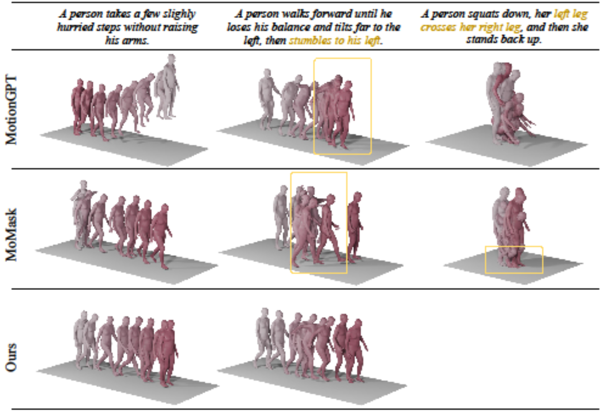

Comparisons
Motion Generation

Motion Caption

Though recent advances in multimodal models have demonstrated strong capabilities and opportunities in unified understanding and generation, the development of unified motion-language models remains underexplored. To enable such models with high-fidelity human motion, two core challenges must be addressed. The first is the reconstruction gap between the continuous motion modality and discrete representation in an autoregressive manner, and the second is the degradation of language intelligence during unified training.
Inspired by the mixture of experts, we propose MotionGPT3, a bimodal motion-language model that treats human motion as a second modality, decoupling motion modeling via separate model parameters and enabling both effective cross-modal interaction and efficient multimodal scaling training.To preserve language intelligence, the text branch retains the original structure and parameters of the pretrained language model, while a new motion branch is integrated via a shared attention mechanism, enabling bidirectional information flow between two modalities.
We first employ a motion Variational Autoencoder (VAE) to encode raw human motion into latent representations.
Based on this continuous latent space, the motion branch predicts motion latents directly from intermediate hidden states using a diffusion head, bypassing discrete tokenization.
Extensive experiments show that our approach achieves competitive performance on both motion understanding and generation tasks while preserving strong language capabilities, establishing a unified bimodal motion diffusion framework within an autoregressive manner.
We propose a bimodal motion-language framework to process language and motion with their owm expert and represent motion in an VAE latent space, supervise the predicted motion latents with a diffusion head.